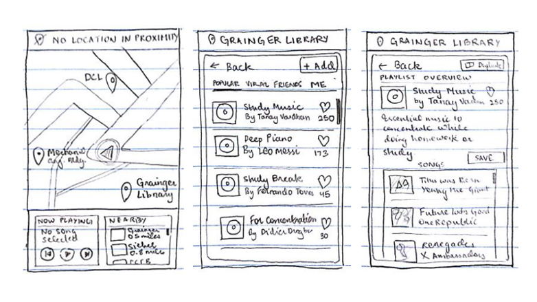

Section is a work in progress. :)
Introduction
The goal of this project was building an application that leverages the already thriving concept of music streaming, and integrates it with user location. The prompt of the assignment was fairly open-ended but required me to create user archetypes, develop an app's concept based on these archetypes, and sketch low-fidelity prototypes. I decided to go one step further, and finalize these sketches into high-fidelity prototypes.
User Archetypes
For developing archetypes, I interviewed five people who I consider potential users in my opinion and inquired about possible situations in which their choice of music is dependent on their location. I also asked about their experience listening to music while moving around, and how that experience can be improved. The archetypes have been created from overlap in behaviours between the different answers that I got from the interviews.
- Urban Explorer
The urban explorer lives in a big city, and often tries to go around the city in search of new places. The purpose of the adventure is rarely clearly defined, and this adventure might be a time for inner-reflection which is why the explorer may choose to wander alone. This person will be listening to music throughout, while walking, during commute and even when the adventure might temporarily halt for a coffee and work break.Therefore, this person will easily get bored of his/her own library and desire to find new and fresh music. - The Hiker
The hiker also embarks on an adventure and likes to keep music for company. Sometimes, when hiking with a group, the hiker may also want to play music around a campfire. In addition, a big problem that the hiker faces is the loss of connection, which creates a need to store music offline for listening. - The Globetrotter
The globetrotter is interested in travelling to new countries and experiencing different cultures. This person likes to learn new languages and listening to foreign music. Using a service that can help discover local music would bridge the gap between cultures using music.
Concept Development
After building archetypes, I decided to go with an application that interacts with real-world landmarks, and allows users to save playlists at these “music locations”. This idea is inspired by Ingress, a game by Niantic Labs, which is also an inspiration for the viral game Pokemon Go. People can publish their own playlists at these locations, and make them available to everyone using the application or choose to restrict it to only their friends or only for their own use. This addresses one of the requirement for the Globetrotter archetype as this music discovery feature helps to constantly find new music, and if in a foreign country, it can be a great source for local music.
Low-Fidelity Prototypes

The basic idea of the application is to create hotspots for many users to store and discover music. An integral part of the app is the first map screen, which guides the user to music locations in their proximity. Once the user is close enough, he/she can browse through the music selection available at that particular location and even contribute to it. At this stage in the app's development, I hadn't decided where the application would source its music from, which is why the exact processes of how a playlist can be imported or played are not reflected in these sketches.